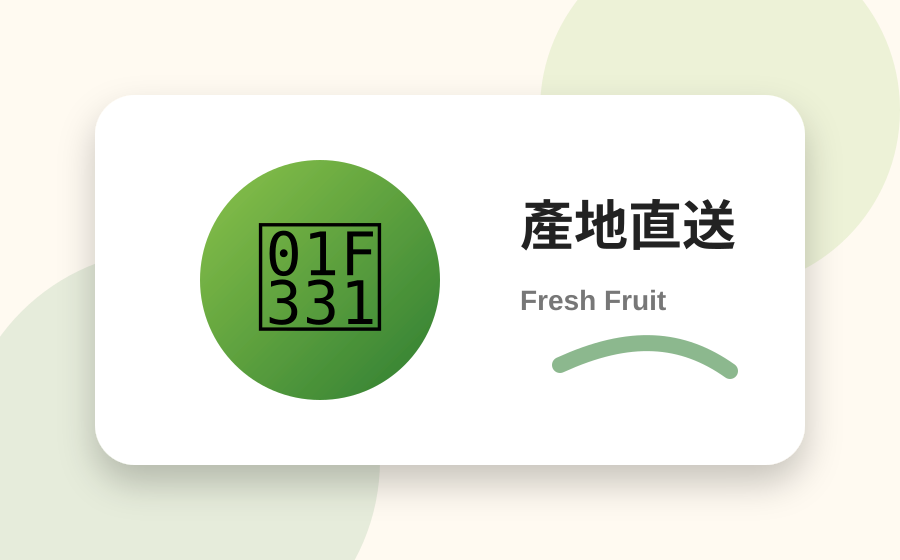
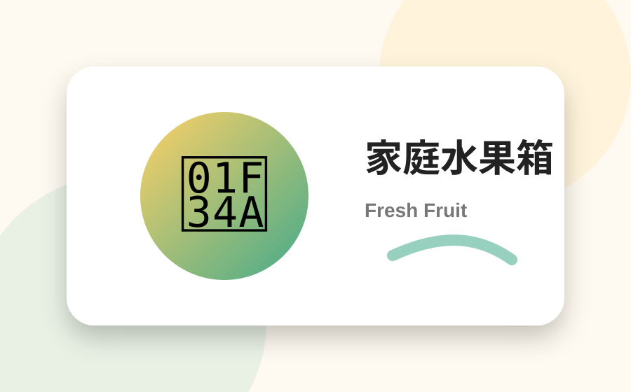
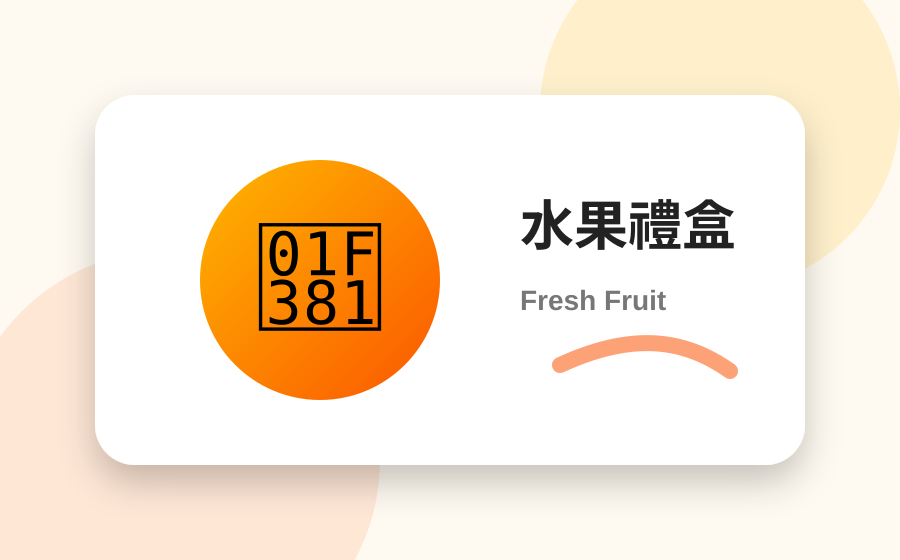
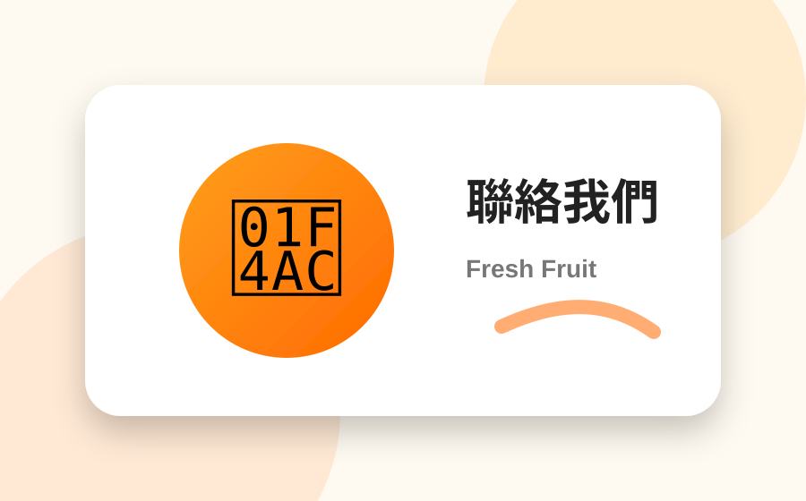

產地直送
減少中間等待，新鮮更有感。

家庭適合
水果箱、禮盒、日常補貨都方便。

送禮體面
企業、節慶、拜訪客戶都合適。

專人服務
下單後可由 LINE 確認配送細節。
HOT SALE
熱銷水果
點選加入購物車，右上角可查看訂單。
FRUIT BOX
預約搭配家庭水果箱 / 企業禮盒
固定每週配送、公司大量採購、節慶禮盒，可直接填寫表單或加入 LINE，專人幫你配組合。
HOW IT WORKS
下單流程
01
挑選水果
選擇喜歡的品項加入購物車。
02
送出訂單
填寫姓名、電話、地址與需求。
03
專人確認
確認配送時間、付款與保存方式。
CONTACT
立即預訂新鮮水果
可串接 LINE 官方帳號、n8n 自動通知、Google Sheet 訂單表。
- 電話：0900-000-000
- LINE：@sweetfruit
- 服務：家庭水果箱、企業團購、節慶禮盒